Channel List
แท็บแรกของแอป — ดูและเล่นช่อง · แตะแถวเพื่อดูวิธีใช้
เพิ่งเริ่มใช้? ต้อง Add a config ก่อน
How To Start?สรุปจาก docs.aptvapp.com · ภาพจาก APTV 1.5.12 (iOS) ภาษา English · ภาพช่องทีวีและข้อมูลส่วนตัวถูกเบลอ
How To Start?
เริ่มดูช่องแรกใน 5 ขั้น — iPhone, iPad, Apple TV, Mac ขั้นตอนเหมือนกัน
- แตะแท็บ Config ที่แถบด้านล่างเข้าสู่ Config Center
- แตะไอคอนโซ่ + มุมขวาบนเมนู Add config จะขึ้นมา
- เลือก Subscribe วางลิงก์ m3u/txt → แตะ 保存 (Save)ลองด้วยลิงก์สาธิต
https://pastebin.com/raw/40MQLfcAได้ (ไม่มีช่องจริง) - แตะวงกลมขวามือของ Config ที่เพิ่มให้ขึ้นเครื่องหมายถูก = ใช้งานอยู่ ถ้าไม่แตะจะไม่มีช่องขึ้น
- กลับแท็บ Channel แตะช่องเพื่อเล่น
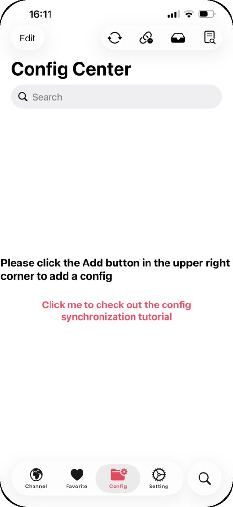
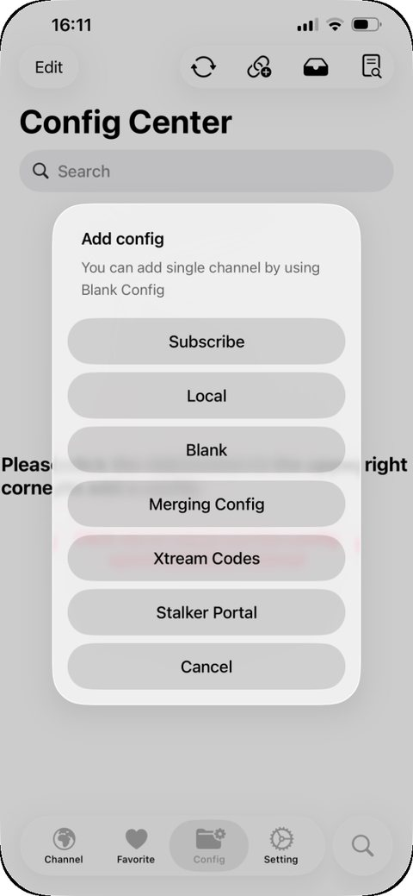
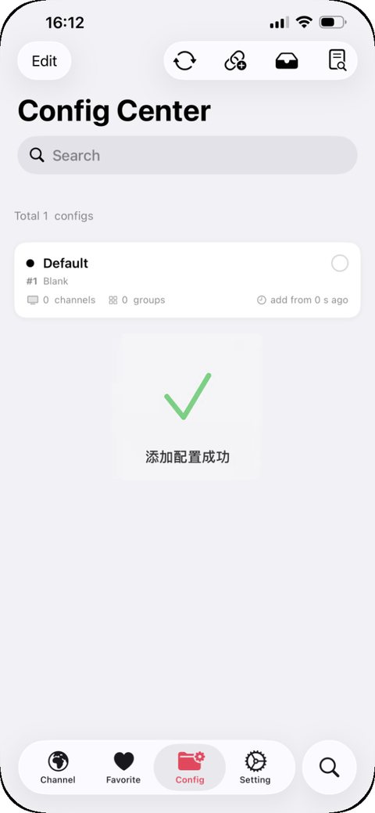
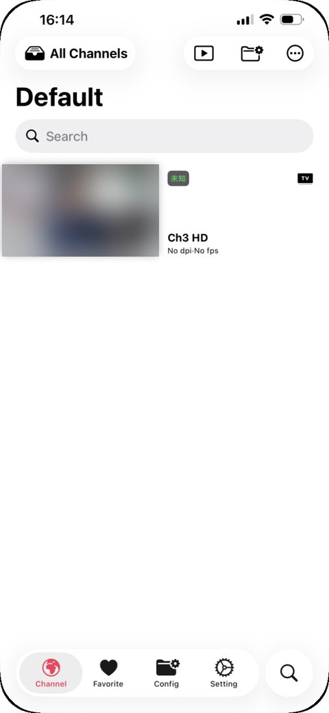
เล่นช่อง
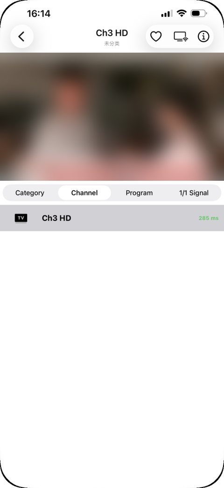
| ตัวเลข ms บนการ์ด | ความหน่วงของแหล่ง ยิ่งน้อยยิ่งดี ไม่มีตัวเลข = แหล่งอาจใช้ไม่ได้ |
| ♡ มุมขวาบน | เพิ่มเข้า Favorite |
| ไอคอนจอ | AirPlay ขึ้น Apple TV / ทีวี |
| ⓘ | ข้อมูลสตรีม (ความละเอียด, fps) |
| Category / Channel | สลับหมวดและช่องโดยไม่ต้องออกจากหน้าเล่น |
| Program | ผังรายการ (EPG) และดูย้อนหลังถ้าแหล่งรองรับ |
| 1/1 Signal | จำนวนแหล่งของช่องนี้ (ใช้กับ Merging Config) |
ส่งไปเล่นใน VLC / Infuse ได้ และเปลี่ยนสัดส่วนภาพได้
เพิ่มช่องเดี่ยว (m3u8)
มีแค่ลิงก์สตรีมช่องเดียว ใช้ Config แบบ Blank
- Config → + → Blank → 保存ชื่อไม่ใส่ก็ได้ (จะชื่อ Default)
- แตะวงกลมขวามือให้ Config นี้ถูกเลือก
- แท็บ Channel → 添加单频道添加多频道 = หลายช่อง · 添加融合频道 = ช่องรวมหลายแหล่ง
- ใส่ Channel URL + Channel Name → 保存รองรับ HTTP, RTP, RTSP, RTMP
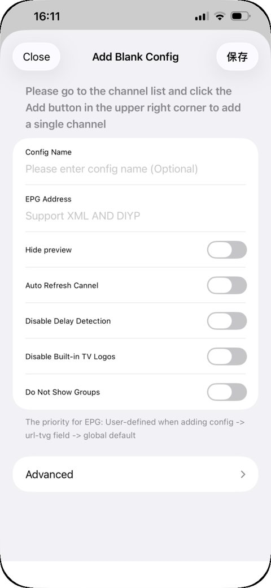
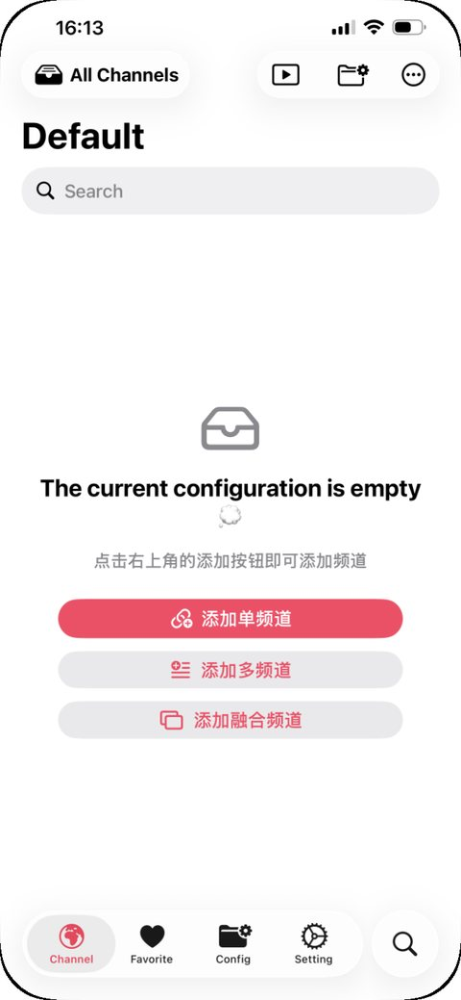
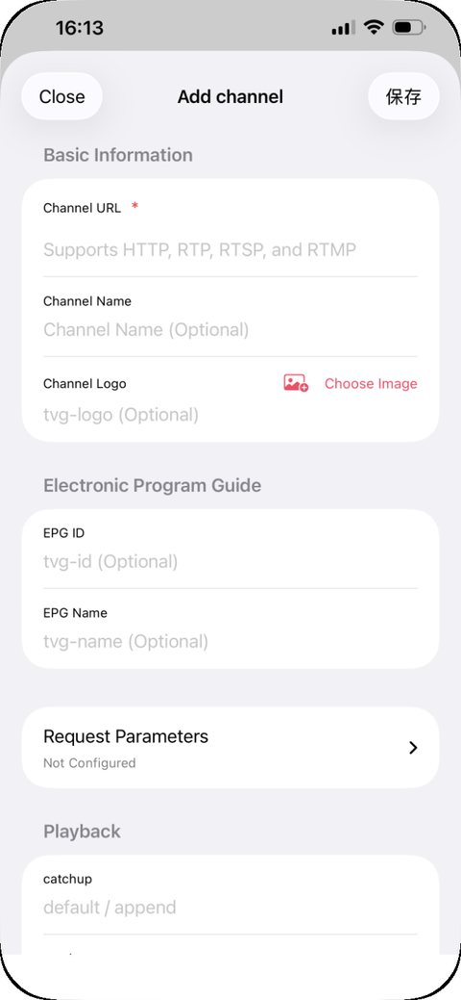
ช่องในฟอร์ม Add channel
| Channel URL * | ลิงก์สตรีม (จำเป็น) |
| Channel Name / Logo | ชื่อ + โลโก้ (ไม่ใส่ก็ได้) |
| EPG ID / EPG Name | tvg-id / tvg-name สำหรับจับคู่ผังรายการ |
| Request Parameters | Header เช่น User-Agent, Referer |
| catchup | default / append → ดูย้อนหลัง |
Quick Play
เล่นทันทีโดยไม่ต้องเพิ่มเข้า Config
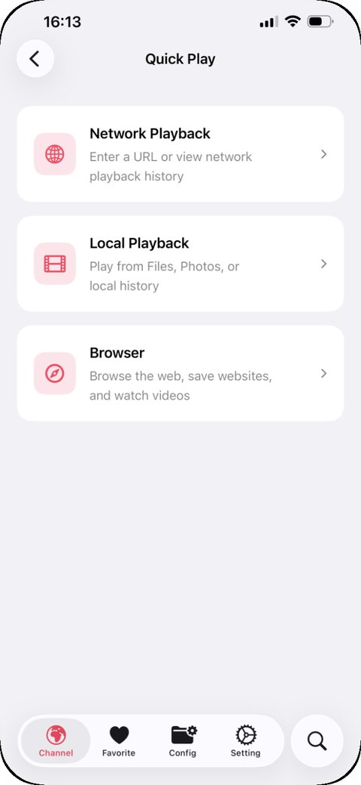
| Network Playback | วาง URL เล่นทันที + ดูประวัติ |
| Local Playback | เล่นไฟล์จาก Files / Photos |
| Browser | เบราว์เซอร์ในแอป → ดูวิธีใช้ |
Browser / YouTube
เปิดเว็บวิดีโอ (YouTube, Netflix, TikTok, Bilibili…) ในแอป
- Channel → ▶ → Browserหน้าแรกมี Video Websites (กดค้างเพื่อจัดลำดับ) และ Favorite channels
- แตะ YouTube หรือพิมพ์ URL ในช่องด้านล่างล็อกอิน Google ได้เหมือนเว็บปกติ
- ปุ่ม ▶ ข้างช่อง URL = Video Sourcesค้นหาลิงก์วิดีโอในหน้า ถ้าเจอจะเปิดด้วยเครื่องเล่น APTV ได้
- ปุ่ม ⋯ = เมนู MoreBookmark, Mobile Website, Media Compatibility, Page Zoom, Fullscreen, History
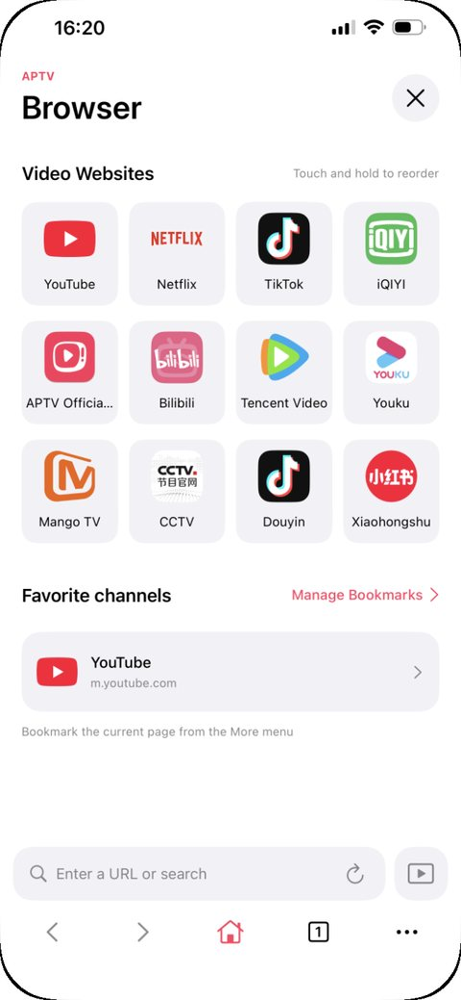
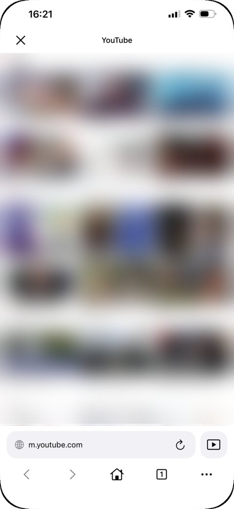
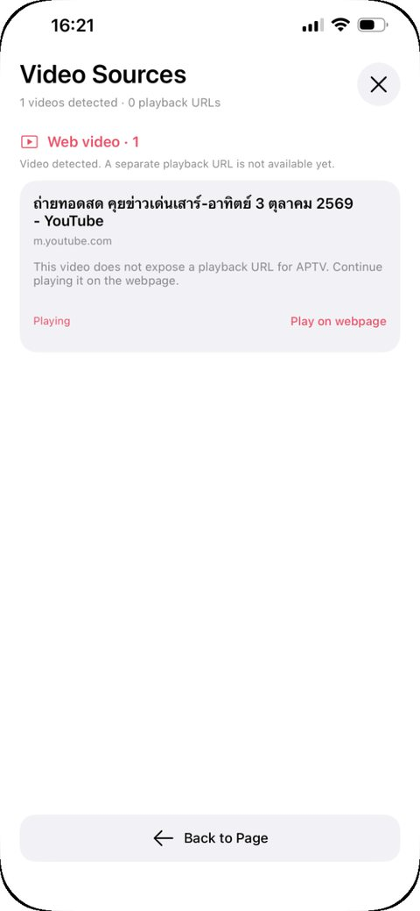
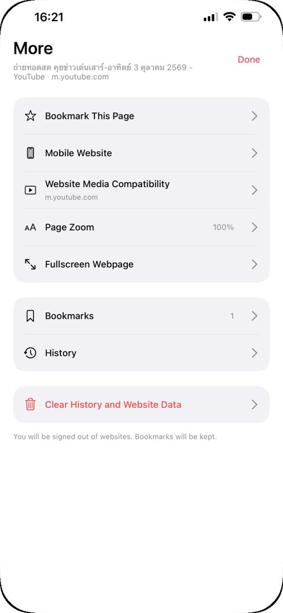
⋯ → Clear History and Website Data จะออกจากระบบทุกเว็บ แต่เก็บบุ๊กมาร์กไว้
ช่องเปิดไม่ขึ้น
- ดูค่า ms บนการ์ดช่อง ถ้าไม่มีหรือสูงมาก แหล่งต้นทางมีปัญหา
- ลองเปลี่ยน Setting › Preferred Player
- ปิด/เปิด Advanced › Hardware Decoding
- ลิงก์ที่ต้องใช้ Header ใส่ใน Request Parameters ของช่อง
- ช่อง IPv6 → เช็กว่าเน็ตรองรับ
- มีหลายแหล่ง → รวมด้วย Merging Config ให้สลับอัตโนมัติ
Favorite
ช่องที่กด ♡ ไว้จะมารวมที่นี่
- เปิดเล่นช่อง
- แตะ ♡ มุมขวาบนของหน้าเล่น
- ดูได้ที่แท็บ Favorite
Config Center
แหล่งช่อง (playlist) ทั้งหมด — แตะ + มุมขวาบนเพื่อเพิ่ม
Subscribe
วางลิงก์ playlist อัปเดตตามต้นทางได้
| ช่อง | คำแนะนำ |
|---|---|
| ลิงก์ Config | ต้องเป็น ลิงก์ตรงไปที่ไฟล์ ไม่ใช่หน้าเว็บ (Pastebin ใช้ลิงก์ /raw/) |
| Config Name | เว้นว่างได้ ค่าเริ่มต้น Default |
| EPG Address | XML (XMLTV) หรือ DIYP · ไม่ใส่จะใช้ url-tvg ในไฟล์ แล้วค่อยใช้ Default EPG ของแอป |
| Auto Refresh | ไม่ได้อัปเดตเกิน 8 ชม. จะดึงใหม่ตอนเปิดแอป |
| Hide preview | ปิดภาพพรีวิวช่อง ประหยัดเน็ต |
| Do Not Show Groups | แสดงเป็นรายการเดียว ไม่แบ่งหมวด |
Local
- เตรียมไฟล์ m3u / txt ไว้ในเครื่องหรือ iCloud Drive แล้วเลือกไฟล์
- ทางลัด: ในแอปอื่น (Files, LINE, Mail) กดแชร์ไฟล์ → เปิดด้วย APTV
- บน Mac: ลากไฟล์จาก Finder มาวางใน Config Center
Blank
Config เปล่า ไว้ใส่ช่องเอง
สร้างแล้วแตะเลือกใช้งาน จากนั้นไปเพิ่มช่องในแท็บ Channel → ดูขั้นตอนเพิ่มช่องเดี่ยว
Merging Config
รวมหลาย Config เป็นอันเดียว ช่องชื่อเดียวกันกลายเป็นช่องเดียวที่มีหลายแหล่ง
- Config → 🔗+ → Merging Config
- เลือก Config ที่จะรวมอย่างน้อย 1 อันลำดับที่แตะ = ลำดับความสำคัญ (แหล่งแรกเล่นก่อน)
- ดูรายการช่องมุมขวาบนของช่องบอกจำนวนแหล่งสำรอง
- เล่นแหล่งปัจจุบันเล่นไม่ได้ จะสลับไปแหล่งถัดไปเอง
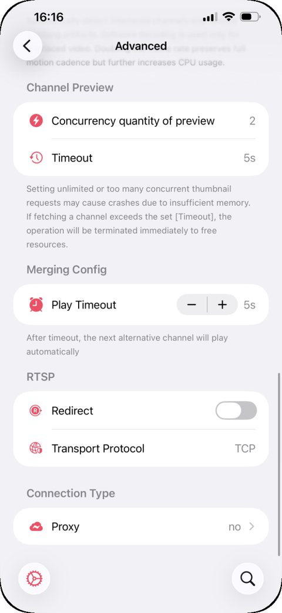
ชื่อช่องต้องตรงกันทุกตัวอักษร: Thai PBS กับ ThaiPBS HD จะไม่รวมกัน
Xtream / Stalker
สำหรับผู้ให้บริการ IPTV ที่ให้ข้อมูลล็อกอินแทนลิงก์
| Xtream Codes | กรอก Server URL, Username, Password · รองรับดูย้อนหลัง |
| Stalker Portal | กรอก Portal URL และ MAC Address (แบบกล่อง MAG) |
ข้อมูลเหล่านี้ได้จากผู้ให้บริการ IPTV ที่คุณสมัครไว้
ดูย้อนหลัง
สำหรับคนแก้ไฟล์ m3u เอง — ถ้าผู้ให้บริการตั้งให้แล้วข้ามได้ ดูย้อนหลังได้จากแท็บ Program ในหน้าเล่น
อัตโนมัติ
ลิงก์ช่องมี PLTV หรือ TVOD แอปจะต่อพารามิเตอร์นี้ให้เอง
?playseek=${(b)yyyyMMddHHmmss}-${(e)yyyyMMddHHmmss}ทั้งไฟล์ (บรรทัด #EXTM3U)
#EXTM3U catchup="append" catchup-source="?playbackbegin=${(b)yyyyMMddHHmmss}&playbackend=${(e)yyyyMMddHHmmss}"เฉพาะช่อง (ต่อท้ายลิงก์เดิม)
#EXTINF:-1 catchup="append" catchup-source="?playseek=${(b)yyyyMMddHHmmss}-${(e)yyyyMMddHHmmss}",CCTV1
http://hostname:port/xxxลิงก์ย้อนหลังแยก
#EXTINF:-1 catchup="default" catchup-source="http://hostname:port/xxx2?playseek=${(b)yyyyMMddHHmmss}-${(e)yyyyMMddHHmmss}",CCTV1
http://hostname:port/xxxเวลา UTC
#EXTINF:-1 catchup="append" catchup-source="?playseek=${(b)yyyyMMddHHmmss:utc}-${(e)yyyyMMddHHmmss:utc}",CCTV1
http://hostname:port/xxx#EXTINF:-1 catchup="append" catchup-source="?playseek={utc:YmdHMS}-{utcend:YmdHMS}",CCTV1
http://hostname:port/xxxTimestamp
#EXTM3U catchup="append" catchup-source="?starttime=${(b)timestamp}&endtime=${(e)timestamp}"${(b)…} / ${(e)…} | เวลาเริ่ม / จบของรายการ |
yyyyMMddHHmmss | เช่น 20261003203000 |
:utc | เวลา UTC (ไทย = UTC+7) |
timestamp | Unix timestamp (วินาที) |
append / default | ต่อท้ายลิงก์เดิม / ใช้ลิงก์ที่กำหนดแทน |
ต้องเปลี่ยน PLTV เป็น TVOD? → Advanced › Laboratory › Replace PLTV with TVOD
ทริคบน Mac
- Local: ลากไฟล์ m3u/txt จาก Finder มาวางใน Config Center
- Subscribe: คัดลอกลิงก์ แล้วกด ⌘V ใน Config Center
m3u กับ m3u8
นึกถึง “ห้องเรียนกับนักเรียน”
| m3u | รายการหลายช่องรวมกัน (playlist) → ใช้ Subscribe / Local |
| m3u8 | ส่วนใหญ่คือลิงก์สตรีมช่องเดียว → ใช้ Blank + เพิ่มช่อง หรือ Quick Play |
Setting
เรียงตามหน้า Setting ในแอป
ตั้งค่าทั่วไป
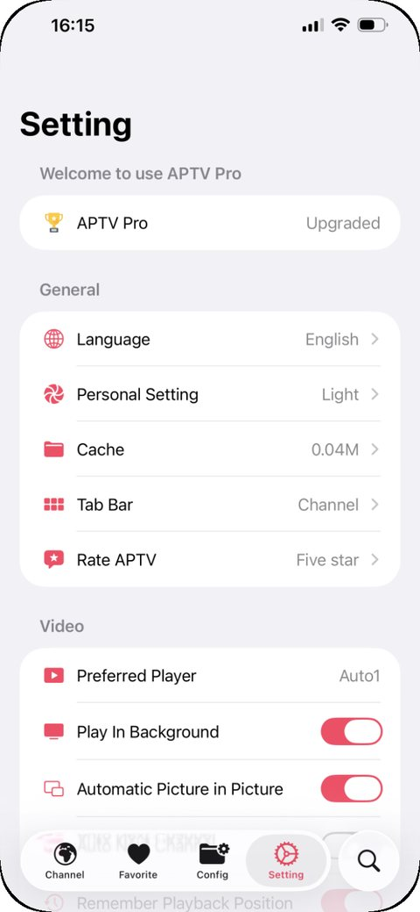
| Language | ภาษาแอป (ไม่มีไทย — คู่มือนี้อ้างอิง English) |
| Preferred Player | engine เล่นวิดีโอ ช่องเปิดไม่ได้ลองเปลี่ยน |
| Play In Background | เสียงเล่นต่อเมื่อออกจากแอป |
| Automatic Picture in Picture | ย่อเป็นจอลอยเมื่อออกจากแอป |
| Show Delay | แสดง ms บนการ์ดช่อง |
| Show Channel Preview | ภาพพรีวิวช่อง |
| Show Groups | แบ่งช่องตามหมวด |
| Show IPV6 ID | ป้าย IPv6 บนช่อง |
| Restore All Settings | คืนค่าการตั้งค่าทั้งหมด |
ผังรายการ (EPG)
| Auto Load EPG | โหลดผังรายการอัตโนมัติ |
| Default EPG | EPG กลางของแอป (มีให้แล้ว) |
ลำดับที่แอปใช้: EPG ที่ใส่ตอนเพิ่ม Config → url-tvg ในไฟล์ m3u → Default EPG
ดูผังได้ที่แท็บ Program ในหน้าเล่น
iCloud Sync
ต้องเปิด 2 ที่
- ในแอป: Setting›iCloud Sync เปิดสวิตช์iCloud Status ต้องไม่ใช่ Disabled แล้วกด Manual Sync
- ใน iPhone: Settings›[ชื่อคุณ]›iCloudเปิด APTV และ iCloud Drive
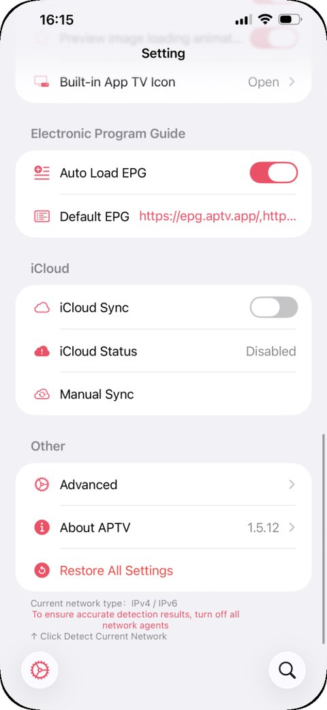
Sync ข้ามเครื่องไม่ได้
- เป็น APTV Pro และกดกู้คืนการซื้อทุกเครื่องแล้ว
- ทุกเครื่องใช้ Apple ID เดียวกัน
- iCloud Status ไม่ใช่ Disabled ทุกเครื่อง
- พื้นที่ iCloud ไม่เต็ม
- Apple TV: ตั้ง Default User ถูกบัญชี — สาเหตุ ~99%
- Apple TV: ออกจาก iCloud แล้วเข้าใหม่
- Apple TV: ถอดปลั๊กไฟแล้วเสียบใหม่
Advanced
Laboratory
ฟีเจอร์ทดลอง เปิดเมื่อมีปัญหาเฉพาะเท่านั้น
| Multicast FCC Optimization | เปิดช่อง multicast ที่รองรับ FCC ได้เร็วขึ้น |
| Preselect HLS Quality | เลือกความละเอียดก่อนเล่น HLS หลาย bitrate ให้เปิดเร็วขึ้น |
| Replace PLTV with TVOD | บางผู้ให้บริการต้องใช้ตอนดูย้อนหลัง |
| Enhanced System Player | ปรับให้เครื่องเล่นระบบเล่นช่องที่เปิดไม่ได้ |
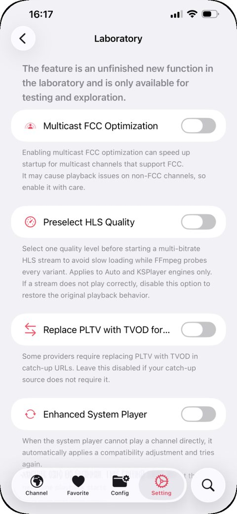
About APTV
| APTV Technical Support | AI Assistant ถาม-ตอบเรื่องแอป (บนสุดของหน้า) |
| How To Start / FAQ | คู่มือทางการในแอป |
| tvOS / macOS / watchOS | ลิงก์ดาวน์โหลดแอปเวอร์ชันอื่น |
| support@aptv.app | |
| RCID | รหัสผู้ซื้อ ใช้แก้ กู้คืนการซื้อไม่ได้ (แตะเพื่อสร้างใหม่) |
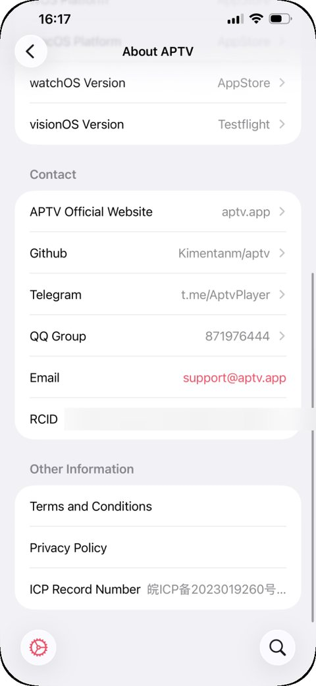
กู้คืนการซื้อไม่ได้
แตะข้อความ error ที่ตรงกับที่เห็น
ไม่พบหลักฐานการซื้อ未获取到您的购买凭据
ล็อกอินผิดบัญชี — ต้องเป็นบัญชีที่ซื้อ ตรวจที่ reportaproblem.apple.com
บัญชีดาวน์โหลด ≠ บัญชีซื้อ — ลบแอป → ล็อกอินบัญชีที่ซื้อ → ดาวน์โหลดใหม่ → กู้คืน (Apple TV ไม่ติดข้อนี้)
ซื้อก่อน 1 ต.ค. 2022 — About APTV › RCID สร้างใหม่ รอสักครู่แล้วกู้คืน ทำซ้ำได้
คำขอไม่น่าเชื่อถือ (MitM)无法信任的请求
Proxy/VPN กำลัง MitM api.revenuecat.com → ยกเว้นโดเมนนี้ (Quantumult X ใส่ -api.revenuecat.com) หรือปิด Proxy → เปิด APTV ให้กู้คืน → เปิด Proxy กลับ
Alias limit reached (พบบ่อยมาก)Error creating subscriber alias. Alias limit reached.
เคยใช้ บัญชีแชร์ แล้วบัญชีนั้นโดนแบน → About APTV › RCID สร้างใหม่ รอสักครู่แล้วกู้คืน
Network / SSL errorA network error has occurred.
ปิด VPN (หรือลองเปิด) แล้วรีสตาร์ตเครื่อง
ช่อง IPv6
เร็ว ชัด เสถียรกว่าเพราะคนใช้น้อย · เน็ตมือถือมักรองรับอยู่แล้ว ปัญหามักอยู่ที่เน็ตบ้าน
| รู้ได้ไงว่าเป็นช่อง IPv6 | มีป้าย IPv6 มุมซ้ายล่างของช่อง |
| เช็กเน็ต | ท้ายหน้า Setting: Current network type (ปิด VPN ก่อน) หรือ test-ipv6.com |
เปิด IPv6 ที่บ้าน
- เราเตอร์: เปิด IPv6เราเตอร์ต่อ PPPoE เอง → Native · ONU ต่อ PPPoE → NAT6
- ONU/โมเด็มไฟเบอร์: ตั้ง IPv4 & IPv6บางรุ่นต้องรหัสแอดมินระดับสูง ขอจากผู้ให้บริการเน็ต
- แอป Proxy: เปิด IPv6Quantumult X → Compatibility Enhancement
ค้นหา
พิมพ์คำที่อยากหา ระบบจะค้นทุกหน้าในคู่มือ